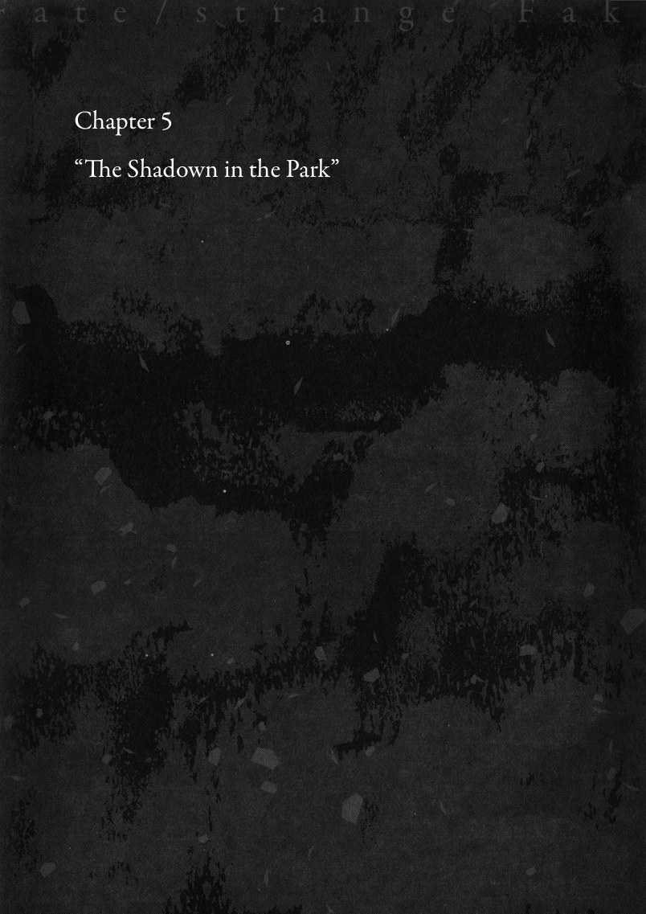
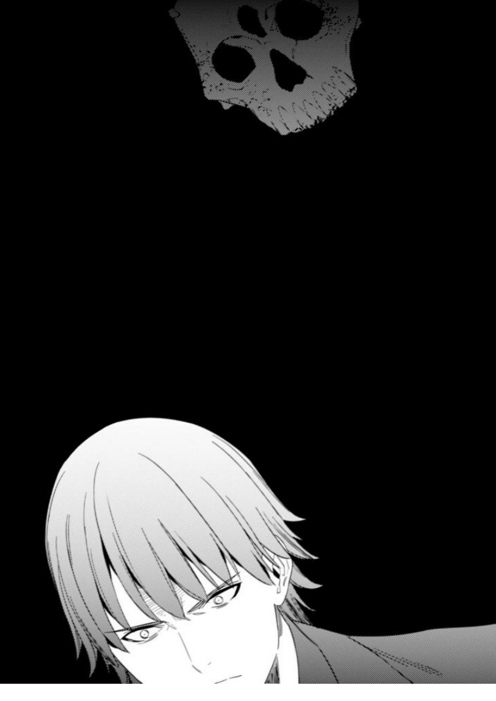

"A Sombra no Parque"
Capítulo 5: Dia 1, Amanhecer
A Sombra na Escuridão
A delegacia. Estacionamento dos fundos.
"...O que é aquilo?"
Ayaka e Saber, que haviam escapado da delegacia pela saída dos fundos, ouviram os tiros e ergueram os olhos do estacionamento traseiro. Viram um homem no ato de saltar da beirada do telhado para o prédio ao lado, e um padre estendendo o braço na direção dele. Então, num movimento fluido, o braço do sacerdote pareceu se alongar até várias vezes o seu tamanho, apenas para um projétil ser disparado de sua ponta de aspecto mecânico, atingindo o homem em cheio e causando uma pequena explosão. Simples assim, ele foi arremessado contra uma janela do hotel vizinho.
Pouco depois, o padre — cujo braço havia retornado ao tamanho normal — saltou em direção ao hotel com várias espadas em cada mão.
O hotel podia ser ao lado, mas ainda havia mais de dez metros entre ele e a delegacia. Distância suficiente para fazer qualquer ser humano normal cair, mesmo um campeão mundial de salto em distância. O padre, porém, cruzou-a com facilidade e desapareceu dentro do hotel.
"Estou sonhando...? Ou aqueles eram 'Espíritos Heroicos'?"
"Você não sente nada quando olha para mim?", perguntou Saber, ansioso.
"Você está me paquerando numa hora dessas? Dá um tempo..."
"Não. Você é, de fato, uma mulher encantadora, mas não foi isso que eu quis dizer. Quando olha para mim, você não tem uma espécie de noção da minha força física e mágica? Algo que talvez surja na sua cabeça claramente escrito, ou..."
"Não faço muita ideia do que você está falando..."
"Entendo..." Saber refletiu ao ouvir o tom confuso de Ayaka. "Talvez porque você realmente não seja uma Mestre adequada..."
"O que isso quer dizer?"
"Depois eu explico com calma. Não adianta se você não consegue ver isso de qualquer maneira. Agora, o importante é que você não consegue distinguir humanos comuns de Espíritos Heroicos. Isso não será problema com os que têm aparência chamativa, mas muitos Espíritos Heroicos não diferem em nada de pessoas normais quando vestem roupas civis."
Quando chegou a esse ponto, Saber checou a própria roupa, então olhou para o céu distante, que começava a empalidecer, e murmurou:
"Eu mesmo gostaria de providenciar roupas civis, mas... Sim, ainda é apenas o amanhecer. Deixarei este terreno, como declarei que faria."
Dentro do hotel.
O hotel ao lado da delegacia havia sido considerado a hospedagem mais segura da cidade, puramente por causa da localização. Essa avaliação, porém, estava prestes a ir por água abaixo.
Mal haviam ecoado, sem aviso, sons de tiros e explosões pela área ao redor quando uma onda de choque atingiu o prédio, causando danos em um dos quartos de hóspedes. Por sorte ele estava vazio, mas o dano à reputação do hotel era inevitável.
Enquanto os funcionários corriam de um lado para outro, incapazes de ter uma compreensão objetiva da situação... o padre que invadira o hotel através do quarto destruído acabou não conseguindo localizar Jester.
Ele apagara completamente sua presença, e até sua energia mágica fora totalmente cortada. No lugar dela havia vários feridos, gemendo caídos no corredor. Provavelmente tinham sido despertados pelos tiros vindos da direção da delegacia e saído de seus quartos para ver o que acontecia. Havia mulheres e crianças entre eles, e alguns sangravam de cortes nos braços.
"Ei, vocês estão bem?"
"Ngh... O quê...?"
As vítimas em choque pareciam não perceber o que havia acontecido com elas.
"Estanquem os ferimentos com panos. Vou chamar uma ambulância imediatamente", disse ele, mas, se o Apóstolo Morto tivesse feito algo com aquelas pessoas, ele não podia simplesmente permitir que fossem levadas a um hospital municipal. Um descuido podia provocar um grande surto de cadáveres ambulantes. Se isso acontecesse, a Guerra do Santo Graal seria a menor das preocupações dele.
Não parecem amaldiçoados nem tiveram o sangue sugado, mas...
Então Hanza percebeu uma criança trêmula observando-o da sombra da escadaria.
"Ei, garoto. Você viu alguma coisa?"
O menino pálido, que ainda não tinha dez anos, assentiu.
"Um homem assustador... gritou 'Sai da frente!'... Aí ele..."
"Você sabe para que lado esse homem assustador foi?"
"...Ele desapareceu."
"...Entendo. Ainda bem que você está bem. Agora está seguro."
Entendo. Ele os deixou vivos para me atrasar.
Hanza afagou de leve a cabeça trêmula do garoto, então tirou o celular.
"Sou eu. Um de vocês cuide da sugestão na multidão, e os outros três cerquem o prédio. Ele pode estar misturado aos evacuados, então tomem cuidado. Não deixem passar ninguém suspeito."
Quando terminou de dar as ordens, Hanza soltou um pequeno suspiro e murmurou:
"Francamente... Um Apóstolo Morto atrás do Santo Graal; é mesmo o fim do mundo."
Main Street. Perto da delegacia.
"Por favor, parem."
Uma mulher se colocou no caminho de Ayaka e Saber quando tentavam deixar a delegacia. Era uma jovem morena, mas seus traços eram difíceis de distinguir. Isso porque ela usava uma máscara estranha cobrindo os olhos. O centro da venda, que podia ser de pano ou de couro, era adornado por uma cruz. Seu corpo inteiro estava coberto por algo semelhante a uma roupa de mergulho preta, e outros enfeites estranhos apareciam em vários pontos do tecido justo. Um pano branco puro enrolado em seu braço tremulava. Ayaka ficou se perguntando se ela fazia parte de um circo.
"Sinto muitíssimo, mas recebi ordens para investigar qualquer pessoa suspeita nesta área."
"Você me parece bem mais suspeita", disse Ayaka, franzindo o cenho. Então percebeu: Havia grandes grupos de curiosos vagando até mesmo pela parte de trás dos prédios, mas os olhos de ninguém sequer se detinham naquela mulher vestida de forma tão suspeita.
Hã? Será que só eu consigo vê-la? Um arrepio percorreu sua espinha.
Em sua mente relampejou a lembrança de uma menininha de capuz vermelho. Ela estava à beira do pânico.
"É uma barreira que desvia a atenção", explicou Saber, tentando tranquilizá-la. "Muito provavelmente, é o poder desse pano em seu braço. Ela escolheu se mostrar apenas para nós, então não se preocupe, Ayaka. Ainda assim, esse cheiro que paira sobre os arredores da delegacia... Deve ser algum tipo de incenso para facilitar hipnose em massa."
"Hipnose em massa?"
"Provavelmente querem ocultar a luta entre o monstro e o padre que acabamos de ver. Os caçadores da Igreja Sagrada não mudam, mesmo depois de oitocentos anos. Ainda assim, com certeza você consegue dizer se eu sou um monstro ou outra coisa, não?"
A mulher de traje estranho ouviu as palavras de Saber e se curvou respeitosamente.
"Presumo que sejam Servo e Mestre. Perdoem-me."
"Não há necessidade de se desculpar. Devoção ao próprio dever é uma virtude", disse Saber, e então notou as pessoas começando a evacuar o hotel uma após a outra.
"O vampiro... ainda está naquele hotel?"
"Sim. Colocamos barreiras nas entradas e saídas; elas reagirão se o Apóstolo Morto as atravessar."
"Isso quer dizer que o vampiro pode sair?"
"Sim", assentiu a mulher misteriosa com toda a naturalidade. As palavras dela fizeram Ayaka olhar de relance para Saber.
"Eu prefiro não ser arrastada para mais confusão, então... estou indo embora."
"Suponho que tenha razão. Eu a acompanharei."
"Você realmente não precisa..."
Soltando um suspiro exasperado, Ayaka se afastou depressa daquela área. Atrás de si ainda ouviu uma voz dizendo: "Se encontrarem tempo, por favor, compareçam à igreja central. O supervisor deve ter algo a discutir com os Mestres", mas aquilo não tinha nada a ver com ela.
"Infelizmente... eu não sou uma Mestre. Desculpe."
"?"
Atrás da mulher de expressão confusa, os hóspedes continuavam a evacuar o hotel em fluxo constante. Uma criança misturada a eles lançou um olhar na direção de Ayaka e dos demais. Inclusive para a mulher da Igreja, que deveria estar protegida pela barreira de desvio de atenção.
A criança cuja cabeça Hanza havia afagado pouco antes viu a mulher executor e exibiu um sorriso nada inocente. Então pensou consigo mesma, consciente de que os Selos de Comando haviam migrado para suas costas:
Ugh. E eu aqui achando que podia dar uma respirada depois de me cansar tanto.
Depois de permanecer por algum tempo entre os evacuados, o menino saiu discretamente da fila e desapareceu na cidade ao amanhecer. Nem atravessar as barreiras dos executores nem ser banhado pelos raios do sol nascente lhe causava problema agora. Porque o corpo de Jester Karture já não era o de um Apóstolo Morto; era o corpo de um garoto humano comum.
E esse garoto murmurou, com um sorriso de inocência infantil que desmentia a luxúria distorcida gravada em seus traços:
"Será que a Srta. Assassin volta logo?" × ×
A delegacia.
"Está tudo bem?"
A delegacia havia se transformado em um campo de batalha. Os executores da Igreja Sagrada haviam aplicado bem sua sugestão, e tudo indicava que o incidente seria encerrado como um ataque de amigos de um ladrão armado preso, numa tentativa de libertá-lo da cadeia. O saguão e o estacionamento, porém, ainda exibiam feridas recentes, e os oficiais estavam cobertos de machucados.
Esse era o clima que dominava a enfermaria da delegacia, onde o oficial que perdera a mão direita para o Apóstolo Morto recebia tratamento. Parecia estar sendo submetido a um feitiço de cura por uma policial que possuía um Fantasma Nobre em forma de grande foice, e o sangue do ferimento mal acabava de parar. Regenerar a mão perdida, porém, exigiria um nível extremamente alto de magia curativa. Sempre restava a opção de adaptar uma prótese comum, mas, naquele estado, ele não tinha a menor esperança de voltar à linha de frente tão cedo.
"Você precisa entender. Daqui para frente, nós assumimos."
"...Não, eu consigo. Por favor, me dê uma chance."
"Com esse ferimento? Da próxima vez talvez estejamos lutando contra o Rei dos Heróis, ou contra Saber, ou contra Rider, de quem nem sequer temos dados. Você pode garantir que não vai atrapalhar numa batalha mais severa do que a que travamos contra Assassin?"
"Eu..."
O oficial rangeu os dentes, frustrado.
Ele é o mais entusiasmado com esta operação, pensou o chefe.
Um dos policiais com Circuitos Mágicos — descendentes de magos errantes — que ele reunira de todo o país. No começo, o chefe os considerara meros peões, mas, ao descobrir os que eram cheios de zelo, como aquele homem, revisara um pouco sua opinião.
Era precisamente por isso que não podia permitir que ele morresse inutilmente. Porque o chefe precisava de alguém que o sucedesse depois que ele perdesse esta guerra e morresse, em nome da oportunidade seguinte.
"Você ainda tem um futuro. Não o desperdice por nada."
"Mas... eu quero proteger o futuro desta cidade."
"O que quer dizer com isso?"
"Se estivéssemos lutando apenas contra Espíritos Heroicos, talvez eu tivesse desistido. Mas o que vai acontecer com a cidade se deixarmos gente tão perversa quanto ele agir à vontade...? Eu não consigo ignorar isso, não como mago, mas como policial."
O homem mal havia passado dos trinta anos. O chefe suspirou ao responder.
"Eu valorizo o seu espírito, mas não posso colocar todos nós em perigo por uma crença cega de que querer é poder. Se você diz que ainda consegue lutar, prove que pode manejar sua arma com uma mão só, ou com uma prótese."
"...Eu vou tentar."
A voz do jovem oficial transbordava espírito de luta. O chefe ainda se perguntava se devia insistir mais, quando o telefone em seu bolso no peito tocou e forçou uma interrupção na conversa.
"...Sou eu."
"E aí, bro! Que desastre, hein! Um vampiro! Quem diria. Tem certeza de que não teria sido melhor invocar Frankenstein no meu lugar e mandar ele preparar um lote enorme de monstros pra você?"
O chefe suspirou diante do jeito habitual de Caster e então respondeu friamente.
"Se isso foi uma piada, eu não achei graça. Não houve fatalidades, mas ainda temos feridos graves aqui."
"Ora, não seja assim. Não existe guerra sem alguém sair machucado. Você tem noção da sorte que deu por não perder ninguém contra aquele monstro? Acho que vou conseguir aumentar a potência do equipamento de vocês com base nessa experiência."
"Ficarei no aguardo."
Não havia ironia alguma nessa resposta. Assim como eles próprios precisavam ganhar mais experiência, também era necessário elevar os limites de seus Fantasmas Nobres. Ainda não extraíam todo o poder deles, mas, um a um, conseguiriam liberar seus Nomes Verdadeiros e desencadear todo o seu potencial. A maioria dos Fantasmas Nobres, como Excalibur ou Gae Bolg, só era capaz de demonstrar seu poder máximo quando se entoava seu Nome Verdadeiro. Se todos os oficiais conseguissem chegar a esse ponto, então a vitória contra Espíritos Heroicos de classe superior finalmente começaria a entrar no horizonte.
"No momento, a que está mais perto de liberar seu Nome Verdadeiro é... ora, bro, aquela sua espada japonesa."
"Entendo. Em breve farei o resto alcançá-la", declarou o chefe, enquanto dizia a si mesmo, ao mesmo tempo, que não podia se permitir otimismo excessivo.
"A propósito, bro", acrescentou Caster, "aquela coisa do tal Shishigou chegou."
"...Ótimo. Ele é tão rápido quanto dizem. Rápido o bastante para me fazer desejar tê-lo trazido para o nosso lado como Mestre."
"Shishigou" era o nome de um mago freelancer conhecido por sua habilidade extraordinária. O chefe lhe pagara uma grande soma para obter um certo objeto. Ele estimara que havia cinquenta por cento de chance de que chegasse a tempo para a Guerra do Santo Graal. O fato de ter chegado tão cedo podia ser chamado de raio de luz na nuvem negra que pairava sobre ele.
Como que para provar isso, Caster relatou o que havia descoberto do outro lado da linha.
"Se eu trabalhar nessa belezinha, aposto que ela vai alcançar o coração de quase qualquer coisa, Espírito Heroico ou vampiro."
O que disse em seguida, porém, contrariou as expectativas do chefe.
"Vou fazer isso pro rapaz ferido que está aí do seu lado, bro. Pra substituir a adaga que foi comida."
"...Se ele provar que consegue lutar."
"É, vou ficar esperando, ouviu? Enquanto isso, vou reidratar umas mercadorias secas da Era dos Deuses e fabricar a arma suprema."
Caster falava como se tivesse certeza de que o oficial se recuperaria. Então pronunciou o nome da coisa.
"Usando como modelo esta adaga de veneno de hidra que mata heróis, isso não vai levar tempo nenhum. Ha ha!"
Snowfield ocidental. A grande floresta.
No fundo da mata, a vários quilômetros da cidade... a mulher Assassin permanecia agachada, arrependida da própria imaturidade.
Como isso pôde acontecer...? Como fui tola.
Ela mal havia questionado o fato de sua energia mágica nunca se esgotar. Seus olhos estavam sempre apenas voltados para a frente. O dever era tudo o que conseguia enxergar.
E esse foi o resultado. Ela havia usado as artes dos grandes chefes com a energia mágica recebida de um monstro.
Maculei as grandes obras dos chefes. Já não sou digna... sequer de me chamar de crente...
Havia muitas razões para que ela não tivesse sido escolhida como chefe dos assassinos, o "Velho da Montanha", a começar pelo temor que seu fanatismo despertava nos que a cercavam. Uma delas, porém, era que ela simplesmente era honesta demais para ser uma assassina.
No caso da delegacia, nenhuma assassina comum teria escolhido um ataque frontal. Às vezes, podiam optar por cometer um assassinato em local visível para anunciar o poder de sua ordem às massas, mas a maioria dos chefes que adotaram o nome Velho da Montanha se conduzia de maneiras verdadeiramente dignas do nome "assassino". Foi justamente por ser vista mais como uma guerreira do que como uma assassina que os líderes de sua época temeram que ela se tornasse chefe. Pressentiam o risco de a organização mudar e expor suas próprias partes vitais no centro do palco político. A mulher Assassin, desprovida de autoconsciência, continuava a culpar a própria imaturidade.
Quem imaginei que fosse? Quem sou eu para pronunciar sentença sobre o ritual herético que desviou os chefes? Eu também não fui atraída pelo Santo Graal? Sim, desde o princípio eu respondi ao chamado do Graal. São os que buscam o Graal que são convocados à Guerra do Santo Graal.
Sim, na verdade eu cobiçava o Graal. Desejava demonstrar minha piedade buscando-o... e destruindo-o. Quis fazer isso para parecer importante diante de mim mesma... Como resultado, desejei o Graal, e o caos da Guerra do Santo Graal enxergou através de mim.
De joelhos no chão, sentia vergonha da própria fraqueza.
Até mesmo um ritual herético como este foi capaz de enxergar meu íntimo rasteiro.
Seu relógio interior a advertia de que chegara a hora da oração, mas ela considerava que seu eu presente, maculado, não tinha o direito de oferecê-la. Em vez disso, decidira se entregar à meditação e confrontar a própria fraqueza.
Quanto tempo havia se passado desde então? Quando ela se pôs de pé lentamente, seus olhos estavam cheios de um brilho escuro, afiado como lâmina.
Ainda não acabou.
Em circunstâncias normais, talvez ela tivesse abandonado a luta, com o espírito quebrado. Ou talvez tivesse feito concessões, dizendo: "Que importa se é a energia de um Apóstolo Morto?" Mas escolheu não fazer nenhuma dessas coisas. Tampouco fugiu. Reavaliou sua posição.
Até a minha existência aqui é vontade de Deus. Se este tempo também faz parte da "vida" que me foi concedida, então... devo cumprir meu dever.
Fuga alguma pode ser permitida.
Meu dever... não mudou. É pôr fim a este ritual herético e... caçar aquele monstro.
Minha própria imaturidade não é motivo para hesitar. Não posso usá-la como desculpa.
Se agia para resolver os próprios sentimentos ou por outra razão, ela não sabia. Assassin sentia vergonha da própria fraqueza por ter desperdiçado esses minutos agachada ali.
Oh, como sou imatura.
Não restava mais hesitação em seus olhos ao notar o sol da manhã filtrando-se por entre as árvores. Depois de reconhecer a própria fraqueza, escolhera mais uma vez o caminho da luta.
O que devo usar para matar aquele monstro?
Um demônio inumano. Era verdade que certa vez ela conseguira esmagar seu coração com Batimento Delirante: Zabaniya. Mas também era verdade que ele ainda existia.
Quantos corações ele tem? Como posso apagá-lo por completo?
Assassin reconsiderou os poderes que possuía. Imitações das técnicas dos chefes. Mas, embora fossem do mesmo tipo, não eram inteiramente idênticas em força. Ela própria considerava que todas as suas técnicas ficavam aquém das dos chefes, mas, em eficácia real, variavam. Algumas possuíam o mesmo poder das técnicas usadas pelos verdadeiros Velhos da Montanha; outras as superavam; e outras eram inferiores.
Por exemplo, havia uma habilidade chamada Corpo Venenoso Delirante: Zabaniya, antes empunhada por um Velho da Montanha conhecido como "O Tranquilo". O poder que "O Tranquilo" alcançara era verdadeiramente aterrador. Transformara cada parte de seu corpo, incluindo todos os fluidos corporais, unhas e pele, e até mesmo seu hálito, em veneno letal. Uma lenda terrível dizia que ela havia massacrado um exército inteiro espalhando seu veneno ao vento.
Assassin, porém, apenas imitava esse poder temporariamente concentrando veneno no próprio sangue. Dizia-se que isso acontecia porque ela imaginava um cenário em que espalhar a morte indiscriminadamente pelos arredores pudesse causar a morte de companheiros ou inocentes, e, por consequência, a concentração do veneno era reduzida.
Sombra Fugidia Caprichosa: Zabaniya era uma técnica para estender e controlar os fios de cabelo de sua cabeça, mas a tradição oral dizia que o Velho da Montanha que de fato a usara era capaz de tornar cada fio tão fino quanto teia de aranha e decepar a cabeça do alvo sem que ninguém sequer percebesse.
Por outro lado, sem que Assassin soubesse, sua Ícor do Devaneio: Zabaniya, que manipulava os alvos por meio de uma canção além do alcance da audição humana, superava sua original em poder. Contra um grupo grande, como usara mais cedo, seus efeitos se limitavam a sacudir os cérebros dos alvos e fazer seus Circuitos Mágicos saírem de controle, mas, se concentrasse sua "canção" em uma única pessoa, ela era capaz de pôr um Servo mediano de joelhos ou dominar por completo um cérebro humano. A original não era tão poderosa assim. Ainda que soubesse disso, porém, ela não aceitaria. Para Assassin, no instante em que a desenvolvera com o próprio poder, aquilo já era uma obra divina insubstituível.
Assassin continuou a enumerar mentalmente as incontáveis técnicas que chegavam ao nível de Fantasmas Nobres e a ponderar qual seria mais adequada para eliminar o monstro. Em meio a essa reflexão, porém, sentiu uma leve inquietação. Era uma dúvida que às vezes também nutrira em vida.
"Sensibilidade Meditativa: Zabaniya" — uma técnica que lhe permitia sentir cada traço do terreno ao redor como parte do próprio corpo. Fora a arte que ela utilizara para localizar a fonte de energia da delegacia. Só em relação a essa técnica não conseguia afastar uma estranha sensação de que algo estava errado.
Dizia-se que essa venerável técnica havia sido usada por um Velho da Montanha, mas em que era ele vivera jamais se soubera com certeza. Não apenas para ela, mas também para seus pares, seus instrutores e até para o atual Velho da Montanha. Restava apenas a tradição de que um Velho da Montanha usara tal arte. Ela tentara recriar a habilidade com base nisso, e no entanto...
Sensibilidade Meditativa era mesmo uma habilidade assim? Um chefe que empunhava uma arte com esse nome ao menos existira de fato?
Até ela, que era chamada de fanática, se via forçada a questionar. Ou talvez fosse precisamente porque dedicara tudo a copiar cada uma daquelas técnicas lendárias que abrigava tais dúvidas.
Sinto como se... algo estivesse sendo escondido de mim. A verdade por trás do chefe que usou este Zabaniya...
Nesse ponto, forçou-se a parar de pensar nisso. Não devia duvidar. Sentia vergonha até de ter considerado tal coisa; era a prova de que, de fato, era imatura.
Mais uma vez, mergulhou em pensamentos para vencer o inimigo.
Durante todo esse tempo, sentia aquela estranha inquietação e o pressentimento fatal de que "algo pode acontecer" gemendo baixinho no fundo do coração. Quase como se ressoasse com alguma coisa.
Centro Correcional Especial Colesman.
Pouco antes.
"Agora... já deve estar na hora."
Pouco antes de a delegacia sofrer o ataque da mulher Assassin, Faldeus havia se isolado em sua oficina, nas profundezas mais internas do complexo prisional. De pé no centro da oficina, cujos apetrechos místicos destoavam do moderno presídio acima dela, ele acalmou a respiração lentamente. Bonecos de todo tipo, de delicados manequins a bonecos de pano usados em xamanismo, estavam entronizados ao seu redor. Todos os seus "olhos" encaravam um pedestal no centro.
Faldeus Dioland.
Vinha de uma linhagem de magos que usavam marionetes e era parente de um mago que certa vez participara da Guerra do Santo Graal de Fuyuki. Da Terceira Guerra do Santo Graal, travada antes da Segunda Guerra Mundial.
As tribulações daquele mago, que empregara Assassin, haviam sido inscritas como "memórias" místicas nas marionetes que usara e transmitidas por meio delas à família. Transmitidas de forma ampla e irrestrita, não apenas ao herdeiro, mas até mesmo a parentes distantes. Ainda assim, nenhum membro do clã se apresentou para declarar que seria ele a conquistar a Guerra do Santo Graal.
Dizia-se que a Terceira Guerra do Santo Graal fora repleta de feitiços proibidos e espíritos malignos da terra, uma quebra de regra atrás da outra. Era natural que qualquer mago pensasse duas vezes depois de ver um registro tão vívido daquilo. Talvez os membros mais poderosos do clã tivessem até percebido que algo insalubre se misturara ao Graal. Um deles — o avô de Faldeus — unira forças com políticos e líderes militares dos Estados Unidos e desenvolvera um plano.
Um plano para realizar uma Guerra do Santo Graal em sua própria terra. Parecia impossível. Afinal, a construção do Graal Maior enraizado na terra, a base da Guerra do Santo Graal, permanecia como um segredo zelosamente guardado dos Einzbern. Deixando esse assunto para depois, no entanto, eles garantiram um terreno sagrado à altura de Fuyuki e seguiram adiante com os preparativos de base.
De todo modo, obter um terreno sagrado utilizável provavelmente também era indispensável para o governo. A Igreja Sagrada era forte nos Estados Unidos e reprimia qualquer tentativa de misturar política de Estado e magia. No fim, essas questões acabaram sob a jurisdição de uma única agência.
Bastava avançar passo a passo na direção da Guerra do Santo Graal de Fuyuki ao longo de um século ou dois. Mesmo que o sistema nacional chamado "América" viesse a mudar, eles continuariam desenvolvendo uma organização com base nisso. Com essa determinação, arrancaram a terra de seus guardiões e passaram a manipular suas linhas ley em grande escala.
Menos de um século depois, porém, por volta da época em que o pai de Faldeus herdara o empreendimento, chegou uma grande virada. Um mago com ligações com o lado sombrio do Estado, mas separado da família de Faldeus, propôs a possibilidade de recriar parte do sistema do Graal Maior.
"Vou roubar para vocês um pedaço do Graal de Fuyuki. Tudo o que têm a fazer é cultivá-lo aqui."
Que absurdo.
Foi o que todos pensaram, mas o mago em questão já havia apresentado resultados ao governo várias vezes no passado, então não podia simplesmente ser ignorado. Ainda assim, uma falsificação continuava sendo uma falsificação, mesmo que cultivada a partir do Graal Maior. Sua conexão com as linhas ley seria fraca em comparação com a entidade completa que era o Graal de Fuyuki. Quando o pai de Faldeus perguntou se realmente era possível recriar o Graal por meios assim, o mago respondeu:
"Só é preciso dar a escorva inicial."
"Dar a escorva inicial, é?" murmurou Faldeus para si mesmo, com um sorriso torto, lembrando-se da história que o pai lhe contara. "Aquela 'escorva' abriu uma cratera vitrificada no lado sul da cidade. Até a ironia tem limite."
Soltou um longo suspiro, então apagou o sorriso do rosto e deu início à sua missão.
"Pelos elementos, prata e ferro. Pelo fundamento, pedra e o Arquiduque dos Contratos..."
As palavras que fluíam da boca de Faldeus eram, sem margem para dúvida, o encantamento para invocar um Espírito Heroico. À medida que o canto prosseguia, a qualidade do ar ao redor começou a mudar.
Um canto impossível.
Um ritual impossível.
Qualquer mago que soubesse da Guerra do Santo Graal pensaria o mesmo. Afinal, todos os Espíritos Heroicos já haviam sido invocados. Deveria haver seis Espíritos Heroicos em Snowfield. O próprio Faldeus declarara isso a Rohngall e à Associação dos Magos. E não havia sido mentira.
A Guerra do Santo Graal falsa. Espíritos Heroicos invocados como partes de um ritual ao mesmo tempo verdadeiro e falso.
Não passavam de sacrifícios. Sacrifícios para agitar as linhas ley e intensificar suas ondas numa direção fixa. Sacrifícios para usar o ricochete resultante... e dar início à verdadeira Guerra do Santo Graal.
"Emerge do anel de restrição, ó Guardião das balanças...!"
No instante em que Faldeus concluiu o encantamento, a luz inundou sua oficina. Os olhos dos inúmeros bonecos entronizados ao redor refletiram o brilho e começaram a tilintar, como se abençoassem a manifestação do Espírito Heroico. Ou como se temessem a presença de morte que enchia o recinto.
Então a luz se concentrou em um único ponto e... nada aconteceu.
"...?"
Quando a luz se apagou, os bonecos cessaram o ruído. Um silêncio gelado envolveu a oficina.
"...Um fracasso...?"
Ele não sentia nem a presença de um Espírito Heroico, nem um vínculo de energia mágica. Mais importante: não havia voz alguma lhe perguntando se ele era seu Mestre.
"Hum..."
Mas não havia irritação no rosto de Faldeus. Sendo honesto, ele considerava isso uma chance de cinquenta por cento. Usar seis Espíritos Heroicos como escorva para invocar mais sete era difícil demais de engolir. Afinal, Espíritos Heroicos poderosos como o Rei dos Heróis já haviam se materializado. Era demais para uma simples "escorva inicial".
"Bem, acho que isso significa que vamos de plano B."
Faldeus soltou um pequeno suspiro e deixou a oficina para trás.
Uma área da prisão servia a Faldeus tanto como segunda oficina quanto como sala de monitoramento. Ao entrar ali, anunciou a Aldra e aos outros subordinados:
"Vamos mudar para o plano B. Entrem em contato com a Sra. Francesca e o Sr. Reeve."
"...O Espírito Heroico falhou em se materializar?"
Faldeus respondeu à pergunta direta de Aldra com um rápido aceno de cabeça.
"Sim. Pelo visto, mesmo com um limite de tempo, sete de uma vez realmente é o limite. Executem a Guerra do Santo Graal falsa como planejado, contando Saber como o sétimo Servo falso, e não como o primeiro verdadeiro."
Não sei se o Graal vai se manifestar ou não, dadas as circunstâncias... mas suponho que isso seja um problema para a próxima vez.
Ainda assim, pelo menos os Selos de Comando surgiram... Será que seria possível eliminar um dos Mestres atuais e usar estes para firmar um novo contrato com o Espírito Heroico dele?
Fitando friamente os Selos de Comando na mão direita, Faldeus anotou seu progresso num bloco. Terminado isso, estava prestes a entrar em contato com todas as partes envolvidas quando percebeu algo ligeiramente fora do lugar.
Ruído tremulava em várias das fileiras organizadas de monitores. Se fosse só isso, teria presumido uma pane comum. O problema era que o ruído se estendia até as imagens vindas de familiares. Podiam ter a forma de monitores, mas eram místicos.
Ruído normal era impossível, então Faldeus suspeitou de interferência de algum mago externo. Então, enquanto verificava os monitores... percebeu que havia rabiscos surgindo no bloco ao seu lado.
Isso não é do meu feitio... Talvez falhar em invocar um Espírito Heroico realmente tenha me abalado um pouco.
Depois de terminar de estranhar as próprias ações, Faldeus estava prestes a arrancar a folha quando, de repente, a mão parou. Em meio aos rabiscos, havia palavras claramente significativas escritas com uma caligrafia totalmente diferente da sua.
"Pergunto-te: és meu Mestre?"
Faldeus sentiu todo o sangue lhe fugir da cabeça de uma vez. Lentamente, passou o olhar pelos arredores, determinado a não deixar a impaciência vencê-lo. Então viu a escuridão.
O ruído estava em um monitor que mostrava o exterior da prisão. Havia um ponto cego sob as árvores, onde a luz não chegava. Os olhos de Faldeus foram atraídos para uma escuridão ainda mais profunda naquele lugar. Mais precisamente, para um pequeno objeto branco flutuando em seu centro.
O monitor era um artefato místico ligado a um familiar. Faldeus enviou uma ordem ao familiar e o fez se aproximar das sombras. Não demorou para ter certeza: aquilo que flutuava na escuridão era uma máscara de crânio distorcida.
"...Com licença; vou sair para tomar um pouco de ar."
Assim que deixou a sala, Faldeus se dirigiu em passo rápido ao lugar que vira no monitor. Ainda era possível que se tratasse de uma armadilha armada por algum mago externo. Avançou com cuidado pelos corredores da prisão, mantendo-se atento aos arredores.
Os corredores eram longos, e o amanhecer ainda não chegara. Enquanto passava apressado por janelas que deixavam entrar quase nenhuma luz... a luz fluorescente na ponta do corredor enfraqueceu, então se apagou. O caminho à frente mergulhou de repente em trevas. E nessas trevas, Faldeus viu aquilo: uma máscara branca de crânio suspensa em profunda escuridão.
Não há engano. Aquela máscara de crânio pertence a... um Espírito Heroico da classe Assassin.
A invocação dele teve sucesso? Ou poderia ser a Assassin que já havia sido invocada como "sacrifício"? Suposições ainda disparavam pela mente de Faldeus quando a luz fluorescente voltou a acender e, ao mesmo tempo, a máscara branca desapareceu.
"Aquilo foi..." começou a murmurar, quando a lâmpada diretamente acima de sua cabeça se apagou. No mesmo instante, uma voz o chamou por trás.
"...Não se vire."
Faldeus conseguia perceber apenas que a voz era masculina. Era tão friamente inumana, porém, que ele não conseguia imaginar a idade do dono, seu porte ou qualquer outra coisa, além do fato de que sussurrara às costas dele.
"...!"
Naquele instante, Faldeus se preparou para a própria morte. Nada do que fizesse agora lhe seria útil. Mesmo que usasse toda a magia que possuía, seria impossível sair daquela situação. A "morte" que sentia era tão certa assim.
Faldeus não sabia o que estava atrás dele. Quase lhe parecia que uma escuridão sem limites se abria ali. Ele não sentia nada. A voz nem sequer estava cheia de sede de sangue; quase o contrário...

Ele não conseguira captar nada naquela voz às suas costas. Parecia que o próprio vazio sem ar o havia chamado. Sua presença era tão rarefeita que ele quase se perguntou se seus ouvidos não estavam lhe pregando uma peça.
Ainda assim, havia uma única coisa que conseguia imaginar: se havia algo atrás dele, devia ser a máscara branca que acabara de ver flutuando na escuridão.
"Pergunto-te... és meu Mestre?"
Uma pergunta vinda do nada. Faldeus sabia que haveria uma resposta ali se se virasse para olhar, mas não conseguia se obrigar a fazê-lo. Tudo o que lhe restava, na quietude, era se dirigir ao homem parado atrás dele.
"...Sim. Se você apareceu em resposta à minha invocação de antes, então suponho que sim."
Após uma breve pausa, um sussurro sacudiu seus tímpanos.
"...Você tem fé?"
"Fé...?" Faldeus ficou em dúvida.
"...Você possui uma crença à qual dedicaria a vida?" A voz devolveu a pergunta com frieza.
Faldeus refletiu por um momento, então estabilizou a respiração e respondeu.
"Eu entregaria toda a minha magia pelos Estados Unidos. Essa é a minha fé."
"...Você tem a determinação de levar essa fé até o fim, mesmo que isso signifique tirar a vida de outro?"
"Quer dizer, se eu estou disposto a matar por isso?"
"...É isso que significaria firmar contrato comigo."
A maioria dos magos já estava preparada para tirar vidas numa Guerra do Santo Graal. Ainda assim, quantos seriam capazes de responder imediatamente enquanto sentem com clareza a própria morte se aproximando? Depois de um breve silêncio, o jovem mago abriu a boca para falar com uma calma surpreendente.
"É claro que estou. Se fosse pelos Estados Unidos, eu não hesitaria nem em matar um compatriota."
Um curto período de silêncio se seguiu à declaração de Faldeus, então a escuridão atrás dele respondeu:
"...Meu nome é Hassan-i Sabbah."
O Espírito Heroico havia declarado seu próprio Nome Verdadeiro. O contrato ainda não havia sido selado, então não se tratava de telepatia, mas Faldeus tinha certeza de que aquela apresentação não chegara a ouvidos além dos seus. O sussurro agitara, de fato, apenas um único ponto em seu cérebro. Parecia quase uma maldição infiltrando-se em suas vísceras.
"Enquanto você conservar sua fé, eu serei sua sombra."
Então, sem jamais se mostrar, a "sombra" deixou uma última frase e se dissipou na escuridão. Restou apenas Faldeus, ainda imóvel. Ele tinha a sensação de que uma linha de energia mágica o conectava a algum "algo" distante. Não conseguia, porém, sentir muito movimento de energia mágica. Não era capaz de determinar de imediato se eles estavam mesmo ligados.
"Entendo... Talvez seja tarde para isso, mas agora parece real."
Se tivesse errado uma única resposta, provavelmente teria morrido. Bastaria apertar um único botão errado para que até o Espírito Heroico que ele mesmo invocara se tornasse seu ceifador. Pela primeira vez, sentiu a realidade de quão irracional — e de quão terrível — um Espírito Heroico podia ser.
Faldeus deu uma pequena risada, embora estivesse encharcado de suor frio.
"Então isto... é a Guerra do Santo Graal."